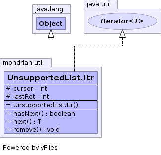

protected class UnsupportedList.Itr extends Object implements Iterator<T>

| Modifier and Type | Field and Description |
|---|---|
protected int |
cursor |
protected int |
lastRet |
| Constructor and Description |
|---|
UnsupportedList.Itr() |
public UnsupportedList.Itr()